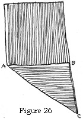
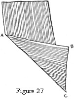

1925—Millinery
by Jane Loewen
CHAPTER VI—CUTTING MATERIALS
I. CUTTING A TRUE BIAS
HOW TO OBTAIN A TRUE BIAS
To cut a true bias lay the length of material flat on the table. Turn the selvage (the warp) of one side back over onto the material even with the cross thread (the woof). When this turned selvage forms a right angle with the lengthwise selvage, the fold or bias is a true bias and correct for cutting.
In other words, a true bias is the hypotenuse of a right triangle, the other two sides of which are formed by the warp and woof thread of the material.
Figure 26. True Bias A C.
WHEN A TRUE BIAS IS NECESSARY
An absolutely true bias is necessary when material is to be stretched and fitted on a frame as for a bias flange (see Chapter VII, section II), a bias-stretched fold, a fitted side crown, a milliner's fold.
IMPORTANCE OF STRETCHING
The fullness at the inner edge (inner circumference) of a bias flange or fold can be worked out only in exact proportion to the amount of stretching done to the outer edge of the flange or fold. The more fullness that is stretched out of the edge the less there will be to work out on the inner circumference.
MATCHING SEAMS
Seams on a stretched bias must always run with the warp or selvage. To make a seam on the cross threads or woof is to have a lumpy-looking seam because the seam stitching runs counter to the heavier warp threads. On striped or figured materials the pattern may be made to match just as on a straight seam.
1. Seam placement. In hats all seams should come at the back unless they will be hidden by trimming. When two seams are required (as for velvet folds or flanges on a large-brim edge), place one on each side of the back. Keep them far enough apart so that the extra length does not look like a patch.
TO CUT A CORRECT BIAS ON LYONS VELVET
In draping hats it is important that bias run the same way. The following rule has been evolved and is uniformly observed by careful workers.
Rule: Place the velvet flat on a table in front of you so that the nap is rough to the left. In turning the bias throw the selvage from you.
II. CUTTING A LONG BIAS
PROCESS OF CUTTING A LONG BIAS
When cutting a long bias the selvage edge is turned across the material on a long slant forming an obtuse angle with the selvage sides. This gives a much longer bias length (see Figure 27).
Figure 27. Long Bias A C.
WHEN A LONG BIAS IS REQUIRED
Material, especially Lyons velvet and soleil, is cut on a long bias in order to avoid a piecing when the bias is used to cover a brim plain or in a puff. A long bias is often an advantage in a drape.
III. TABLE OF BIAS MEASURES
The measurement given may be on the selvage or through the strip of bias. Always note which measure is given. The following table is of help in determining the amount of material necessary for a hat.
6 inches on the selvage of a bias = 4½ inches through the bias.
9 inches on the selvage of a bias = 6¼ inches through the bias.
10 inches on the selvage of a bias = 7¼ inches through the bias.
12 inches on the selvage of a bias = 8½ inches through the bias.
18 inches on the selvage of a bias = 13¼ inches through the bias.
24 inches on the selvage of a bias = 18 inches through the bias.
IV. RULES FOR MEASURING MATERIAL FOR A BIAS WHICH IS TO BE STRETCHED
FOLDS
In measuring the length of either bias flange or fold, stretch the bias strip (with correct width measure as given below) tightly around the edge of the hat and allow one-half inch on each end for a seam.
Stretch and pin the material to the form as it will be when finished. That is, down the center lengthwise for a fold; on one edge for a flange.
In measuring for a stretched bias fold of not more than one and one-half inches finished, allow three quarters of an inch to be taken up in stretching and one inch for turning under the edges. That is, one and three-quarters inches in all.
For a fold more than one and one-half inches, allow one-half inch more stretch for each inch added in width.
FLANGES
In measuring for a stretched bias flange of not more than one and one-quarter inches when finished, allow five eighths of an inch to be taken up in the stretching and one inch for turning under the edges. That is, one and five-eighths inches in all.
For a flange of more than one and one-quarter inches when finished, allow three quarters of an inch for stretch—one and three-quarters inches in all.
V. CORRECT SHADING FOR VELVET AND SOLEIL
To shade correctly on a fitted hat, velvet or soleil should have the corner or bias of the material at the front and be rough from the face. This is only because the pile is long and has depth of color. When placed in this way the darker and more becoming shade is next the face.
VI. MEASURING A FRAME FOR THE CORRECT AMOUNT OF MATERIAL
This may be done by measuring and computing the amount with a tape measure, or by cutting paper patterns and placing them accurately on a strip of material the width of that to be used, and measuring the strip.
VII. ACCURACY IN CUTTING, A LARGE FACTOR IN COST SAVING
A PAPER PATTERN TO BE MADE FIRST
This prevents mistakes in cutting, because all that is experimental about the fitting is worked out on paper. From the paper patterns may be measured the exact amount of material needed. In using expensive fabrics inches saved means dollars saved in cost.
CORRECT PLACING OF PATTERNS IMPORTANT IN TWO WAYS
1. Correct results. The paper patterns should be so placed on the material that a bias comes in the front on a brim, so that the crown material shades the same way as the brim in front when velvet or satin is used.
A bias side crown can shade the same, way in only one place because the entire side crown runs one way. This one place should be the front.
2. Greatest economy of materials. By proper placing of the pattern a great deal of material may be saved. Because of the swing of the brim in fitting, one pattern may be made to fit into the curve of the other. If the material is merely fitted on the brim without making patterns, this advantage is lost.
VIII. METHODS USED FOR CUTTING MALINE
Because maline is merely a series of holes or cells, different methods are used for cutting.
MALINE USED FOR FOLDS
For folds maline is cut on the straight lengthwise. This avoids the use of more than one seam. A bias is not needed, for the open mesh allows for all the give necessary. A bias would warp out of shape and stretch to a string.
MALINE USED FOR PLEATINGS
For pleatings where much cutting is to be done have the material folded once, as it comes, and pin it up to a 10- or 12-inch length. Pin flat on the center fold and smooth out all fullness or wrinkles. Then cut the strips for pleatings. Take out the pins and separate the strips.
For a trimming of pleatings the maline should be folded over.
For a brim-pleated ruffle maline is usually cut into three strips and each strip folded double before pleating. The original center fold of maline makes the fold of one strip.
For a side-crown trimming of many rows or pleated rosettes maline is ordinarily cut into six strips. Each strip is folded over before pleating into a dovetail rosette. This is then sewed to the side crown on a rosette foundation.
MALINE USED FOR ROSETTES
For large rosettes the full width of maline is often sewed in close loops to a twisted length of cable wire or a tab. The loops must be very close and sewed on both sides of the foundation.
The loops are then spread out the full width and clipped all around with sharp scissors. This gives a ball-like rosette.
MALINE USED FOR BOWS
For bows of maline the full width should be folded and made over a foundation form of cable wire. The wire may be looped in a regular bow effect (like a lover's-knot bow) and the maline tacked over it.
Always use soft, loose knots in maline bows.
Always handle maline as little as possible. Handling crushes it.
Always use a moderately hot iron. Too hot an iron melts the sizing and tears the mesh of the maline.
IX. CUTTING BIAS BINDING FOR FRAME AND CROWN EDGES
ECONOMY OF TIME
Economy of time in cutting is an important item in a large workroom. When the correct method is used, one girl can cut enough crinoline or mull to last for weeks, in a few minutes. Cut a bias corner from the length of binding material. Fold back five inches of material lengthwise (on the bias edge). Turn this again and again until the full width is folded. This will give all the bias edge folded together in one space of five inches. Fold and flatten the entire length of material, which may be five or six yards long. Place pins at intervals of a few inches. The selvage will wind in a bias slant around the fold. With a sharp pair of scissors cut one-inch strips from the top, folded, bias edge.
The best materials for frame and crown edges are crinoline, cotton, mull, or lightweight muslin. When the entire amount of binding is cut, wind it into flat rolls ready for use. Before binding an edge always stretch each bias strip so that there is no slack in it. This gives a smoother surface.
QUESTIONS
- Give directions for cutting a true bias.
- Give directions for cutting a long bias.
- When is each necessary?
- Give the rules for measuring material for a stretched bias fold.
- How may material for a hat be cut most economically?
- How does maline cutting differ from that of other materials? Why?
- What is the correct way to shade velvet?
- How is bias frame binding cut?